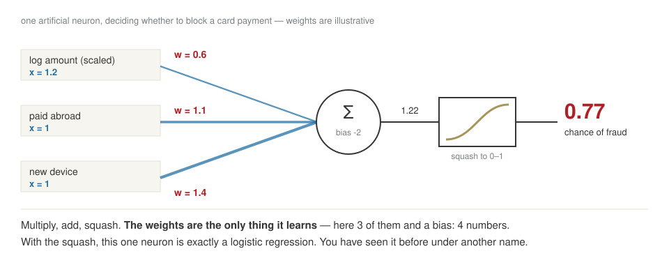
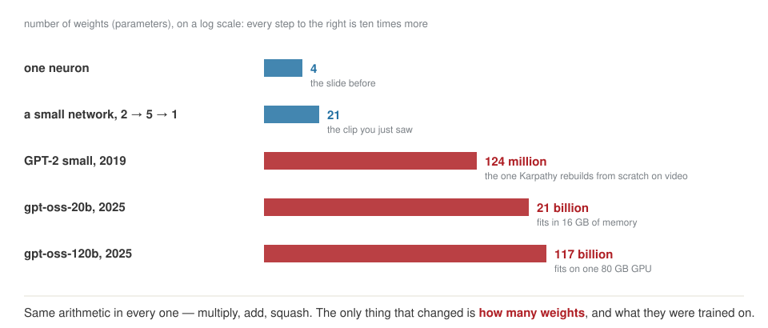

How we will work, and what is inside the machine
Week 1 · Wednesday 23 September 2026 · 10:00–13:00
AI for Business and FinTech · European School of Economics, Florence
Today, at a walking pace
| 10:00 | who I am, and who you are |
| 10:35 | what this course is for, and how we shape it around you |
| 10:55 | set up the workbench: Colab, GitHub, the notebook |
| 11:20 | break |
| 11:30 | from one neuron to an LLM, and one token’s journey through it |
| 12:40 | read a real model release like an engineer |
| 12:52 | between Wednesdays, homework, three lines in your own words |
Thirty hours is a long time. Today we spend some of it on getting to know each other — it pays back in every session after this one.
Part 1 Two people, one room
Who I am

Niccolò Salvini, PhD · Adjunct Professor
- Economics, Florence — where I learned that theory needs data to survive contact with reality
- MSc, Statistical and Actuarial Sciences, Milan — from reading data to engineering it
- PhD, Healthcare Data Science, Rome — why a model works, and exactly where it breaks
- Founder, Intuo — data pipelines and AI for companies that wanted AI before they had clean data
- Adjunct Professor — Health Data Science at Università Cattolica, and this course at ESE
Part 2 What this course is for
What you leave with in December
- Build — a working pipeline in Python: data in, analysis, a model or an LLM application, a result you can reproduce.
- Check — the habit of testing what an assistant or a vendor tells you, with a number and not with a feeling.
- Decide — turn a model’s output into a decision with a cost, and say when not to use AI at all.
- Defend — present it to people who will not read your notebook, including a regulator.
Ten weeks, one thing built each time
| 1–3 | 23 Sep – 7 Oct | a data pipeline, and a model evaluated honestly |
| 4–5 | 14 – 21 Oct | an LLM application: retrieval, tools, evaluations |
| — | 26 Oct | reading week — case brief, 40% |
| 6–8 | 4 – 18 Nov | fintech cases, a backtest, a DeFi analysis |
| 9–10 | 25 Nov – 2 Dec | red-team, and finish the capstone — portfolio, 60% |
| Rev. | 9 Dec | you present it |
Every artefact you build stays in your repository and becomes part of the next one. Nothing here is thrown away.
One thread through all of it: you build a tiny LLM
The best way to understand the pieces is to build them. A few pieces a week, small and on purpose badly trained — the point is how, not a good model.
| week | the piece | what it makes obvious |
|---|---|---|
| 2 | a tokenizer, trained on your own texts | why Russian costs more — you watch it happen |
| 3 | a model that guesses the next character | predicting text is just classification, with a base rate |
| 4 | embeddings that it learns | “similar meaning” as a distance, before we search with it |
| 5 | attention, and a tiny GPT trained on central-bank statements | today’s figure, computed by you |
Following Andrej Karpathy’s Zero to Hero — in Colab, on the free GPU, a few minutes of training each.
What you wrote in your application
| you wrote | where it lands | and before that |
|---|---|---|
| product and project work | 5 · the product lens · 10 · build/buy, cost at scale | it is the lens, every week |
| data and decisions | 2 · analysis · 3 · a model, and a threshold that costs money | the whole first month |
| trading | 7 · a backtest, and every way it lies | market data from week 2 |
| crypto and DeFi | 8 · on-chain data, AMMs, lending, MiCA | on-chain series from week 2 |
Is this still true? What is missing, and what would you pull forward?
The map is a plan, not a contract. The capstone is yours to choose — and with one student, the order can move.
How we work, with only two of us
- A lab, not a lecture. You write code from today, with an assistant beside you. You do not need to know Python. You need to be able to judge what the assistant produces.
- Bets, not quizzes. Before a cell runs I will ask you to write down a number. Being wrong is the point; it is how the result sticks.
- Your keyboard. I will not touch it. When it breaks, read the error before asking me.
- Every Wednesday starts with you: twenty minutes on your homework. I pick two lines at random and ask what they do.
- Feedback runs both ways. Too fast, too slow, not relevant to you — say it that week, not in December.
The deal, said once
- The rule of the course: anything an AI produced and you submit, you must be able to explain line by line. I will ask.
- Nothing confidential goes into an AI tool. Ever.
- Markets, crypto and DeFi here are educational simulations. Nothing in this course is investment advice.
| weight | when | what | |
|---|---|---|---|
| Case brief | 40% | due Sun 1 Nov, presented 4 Nov | the LLM application of weeks 4–5, treated as a product |
| Portfolio | 60% | due Sun 6 Dec, presented 9 Dec | your capstone: pipeline, memo, risk canvas, roadmap |
Both are assessed on your repository — the commits, not a PDF. Weekly homework is formative, and completing it is a condition of the certificate.
Part 3 The workbench
Set it up once, together
LAB · session.ipynb § A — Setup
- Open the week 1 notebook in Colab, and run the first two cells.
- Create a private GitHub repository,
ese-ai-fintech, and add me as a collaborator. File ▸ Save a copy in GitHub→week-01/session.ipynb. That is your first commit.- Optional today, needed from week 4: a Google AI Studio key in Colab’s 🔑 Secrets, as
GEMINI_API_KEY.
If something refuses to work, we fix it now — not at 23:50 on a Tuesday.
Break — ten minutes, outside the room.
Part 4 From one neuron to an LLM
Three sentences from three pitch decks
Bet before we start
- “Our assistant remembers every conversation it has had with your customers.”
- “It learns from your corrections in real time.”
- “99.2% accuracy on invoice extraction.”
You have heard a version of all three in your work. Two are impossible as stated. One is unanswerable as written. Write down which is which — by one o’clock you can answer two of them yourself.
One neuron is a decision you already know
Bet before we look
A card payment: large, made abroad, from a new device. Three numbers in, one number out. What would you do with each of the three before adding them up?

Learning means walking downhill
Measure how wrong it is. Nudge every weight a little in the direction that makes it less wrong. Repeat. That is training — for four weights, or for a hundred billion.
More neurons, and the line learns to bend
One neuron draws a line. Five of them, blended, follow a curve. Stack layers of them and the network invents its own features — nobody tells it which.
From 4 numbers to 117 billion

An LLM is that network, given one job
Guess the next piece of text.
That is the whole training objective. Everything else you have seen a chatbot do is learned on the way to doing that well.
1 · Pre-training
Trillions of tokens of internet text. Months of GPUs. Out comes a base model: it continues documents. Ask it a question and it may answer with three more questions.
2 · Post-training
Many thousands of example conversations, written or checked by people. Then reinforcement learning on what gets rated well. Out comes an assistant.
3 · What you download
Two files: the weights — billions of numbers — and a few hundred lines of code that run them. That is a model.
The frame is Karpathy’s. When a vendor says “our model”, ask which of the three they actually did. It is almost never the first.
Follow one prediction through

It never sees a word
Bet before we look
"Il margine è insostenibile" — four words. How many pieces does the model cut that into? Write a number.

The same sentence, twice, one tokenizer apart
Same model family, same sentence. 33 pieces became 18.
Take it apart yourself
LAB · session.ipynb § B1 — tiktoken
Type your own text and watch the count:
- the same sentence in English, then Italian, then Russian
- a number:
1,234,567.89— count the pieces before you look - your own surname, then a listed company, then a company founded last year
Then tell me: which of those is the model least equipped to reason about, and why?
How the tokens talk to each other: attention
Bet before we look
“The bank raised rates because it feared inflation.” — how does the model know what it refers to?

Everything it knows, every time

Which disposes of claim one
The model remembers nothing. Something else is storing and re-sending.
That something is a database, it has an owner, and every turn you pay to send it again. “It remembers” is not an AI capability. It is an infrastructure invoice.
And claim two
“It learns from your corrections in real time.”
You have just seen what learning is: weights nudged downhill, over trillions of tokens, for months. When you call the model the weights are frozen. Nothing you type changes them.
What can honestly be meant is one of two things: your correction was written to a store and re-sent next time (fast, cheap, and not learning), or it entered a retraining queue (real, and measured in weeks).
Ask which. The answer tells you whether you are buying a model or a database. Claim three — the 99.2% — needs a base rate, and that is week 3.
Part 5 Read a release like an engineer
From OpenAI’s release of gpt-oss, August 2025
“Each model is a Transformer which leverages mixture-of-experts to reduce the number of active parameters needed to process input. gpt-oss-120b activates 5.1B parameters per token … The models have 117b and 21b total parameters …
We tokenized the data using … o200k_harmony … The models were post-trained … including a supervised fine-tuning stage and a high-compute RL stage. … The weights … are freely available … and come natively quantized in MXFP4. This allows for the gpt-oss-120B model to run within 80GB of memory … Available under the flexible Apache 2.0 license.”
And from their spec table: context length 128k.
Circle every word you could now explain to your old team in one sentence. Then we take the rest, one at a time.
What each one means, and the question it answers
| in the release | what it is | why you care |
|---|---|---|
| Transformer | the block you saw: attention + neurons, stacked | every current LLM is one |
| 117B total parameters | the weights — the numbers learned in training | roughly how much it can hold |
| mixture-of-experts, 5.1B active | only a few specialist sub-networks run per token | big model, cost of a small one |
| o200k_harmony tokenizer | the ~200,000-piece vocabulary | the price of your language |
| post-trained: SFT + RL | step 2 — from base model to assistant | where its manners come from |
| context length 128k | the size of the box | how much you can show it at once |
| quantized, 80GB | each weight stored in fewer bits | runs on one GPU instead of a rack |
| open-weight, Apache 2.0 | you download the weights and may use them commercially | nothing leaves your servers |
Every word is in the glossary, with the week it becomes something you compute.
If you want to go further this week
- Andrej Karpathy, Deep Dive into LLMs like ChatGPT (YouTube, 2025) — the first hour covers everything we did today, slower and better drawn. Stop at inference.
- LLM Visualization, bbycroft.net/llm — a real small model in 3D, and you can follow one token through every block.
- Your glossary for this course.
Part 6 Before you go
Between Wednesdays
| quick questions | WhatsApp or Telegram — whichever you prefer. I answer within one working day |
| anything that counts | in your repository, never in chat |
| Wed 11 November | I may be in Milan that day — we agree a make-up date now |
| if you miss a session | tell me before, and the notebook is on the site the same day |

Scan it now — WhatsApp.
Telegram: tell me your handle.
Close
Homework 1 — your starting point, written down: who you are as a learner, the question you want answered by December, your own tokenizer experiment, and ten words from the glossary in your own words.
Due Tuesday 29 September, 23:59, in your repository.
Before you leave: three lines at the bottom of the notebook, in your words — then commit.
Next week: the assistant writes the code, you decide whether it is true — and you train your first tokenizer.
Spare, if there is time: a taste of DeFi
Bet before we compute
A pool holds 10 ETH and 30,000 USDC, so the quoted price is 3,000 USDC per ETH. You buy 1 ETH from it. What do you pay?
The pool keeps one rule: ETH × USDC stays constant. 10 × 30,000 = 300,000.
After your trade it holds 9 ETH, so it must hold 300,000 ÷ 9 = 33,333 USDC. You paid 3,333 — 11% above the price on the screen.
And that is before any fee: the price moved because you traded. In week 8 you simulate what it does to the people who fund the pool.
AI for Business & FinTech · ESE Florence